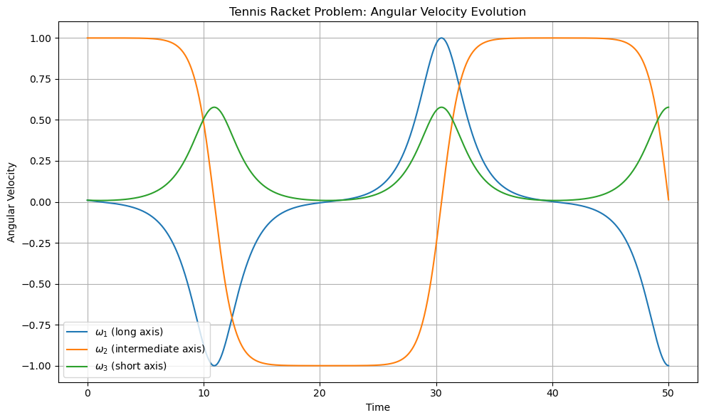

B1.8 The Tennis Racket Problem and the Intermediate Axis Theorem#
B1.8.1 Learning Objectives#
By the end of this lesson, you will be able to:
Analyze the dynamics of the tennis racket problem using Euler’s equations
Derive and interpret the stability conditions for rotation about each principal axis
Compute the time evolution of the angular velocity vector for small perturbations
Understand the geometric structure of energy and angular momentum conservation
Appreciate how this problem illustrates fundamental nonlinear dynamics
B1.8.2 Introduction: The Tennis Racket Phenomenon#
Imagine tossing a tennis racket (or a smartphone, book, or screwdriver) into the air so that it spins around one of its three principal axes. You observe:
Rotation around the long axis: stable
Rotation around the short axis: stable
Rotation around the intermediate axis: unstable — it flips midair!
This is the Intermediate Axis Theorem, also known as the Tennis Racket Theorem or Dzhanibekov Effect. It’s a striking example of nonlinear dynamics and rigid body instability.
B1.8.3 Setup: Rigid Body and Principal Axes#
Let a rigid body have principal moments of inertia:
and a corresponding body-fixed frame with angular velocity components:
We’ll assume no external torques: \(\vec{N} = 0\). This means the angular momentum \(\vec{L}\) and total kinetic energy \(T\) are conserved.
B1.8.4 Euler’s Equations (Torque-Free)#
The equations of motion for a rigid body with principal axes are:
These nonlinear differential equations govern the evolution of the angular velocity components in the body frame.
B1.8.5 Conserved Quantities#
1. Rotational Kinetic Energy:#
This describes an ellipsoidal surface in \(\omega\)-space. Each point on the surface corresponds to a combination of angular velocity components that yield the same total kinetic energy.
2. Angular Momentum Magnitude:#
This defines a sphere in \(L\)-space, assuming we fix the magnitude of angular momentum. But since we often express \(L_i = I_i \omega_i\), this becomes a quadratic surface in \(\omega\)-space, often equivalent to an ellipsoid embedded within a spherical constraint when visualized geometrically.
So, depending on perspective:
The kinetic energy constraint is an ellipsoid in \(\omega\)-space
The angular momentum magnitude constraint appears as a sphere (or another ellipsoid)
The system evolves along the intersection of these two surfaces, which restricts how \(\vec{\omega}\) can move.
B1.8.6 Stability Analysis#
Let’s linearize the Euler equations around steady rotation solutions to analyze stability. This gives insight into what happens when the rotation is nearly aligned with one of the principal axes and we introduce a small perturbation.
Case 1: Rotation about axis 1 (long axis)#
Assume:
\(\omega_1 = \Omega\) (constant),
\(\omega_2, \omega_3 \approx 0\) (small perturbations)
Linearized Euler equations:
Differentiate the first and substitute the second:
Or:
Since \(I_1 < I_2 < I_3\), both \((I_3 - I_1)\) and \((I_1 - I_2)\) have opposite signs ⇒ \(\lambda^2 < 0\)
✅ Stable — the motion is oscillatory.
Case 2: Rotation about axis 2 (intermediate axis)#
Assume:
\(\omega_2 = \Omega\) (constant),
\(\omega_1, \omega_3 \approx 0\) (small perturbations)
Linearized Euler equations:
Substitute to get a second-order equation:
Now, both terms in the numerator are negative, so:
❌ Unstable — the solution grows exponentially.
What does this mean physically? If a rigid body is set spinning perfectly around its intermediate axis, it may initially appear stable. However, any small perturbation in the direction of rotation — even from numerical error or the tiniest asymmetry — can grow exponentially over time.
This does not necessarily mean that the body will always visibly “flip” — instead, it means the rotation direction gradually shifts away from the intermediate axis toward a combination of the other two axes. In practice, this often manifests as a dramatic rotation reversal (or flip) because the angular velocity vector traces out a complex trajectory on the angular momentum sphere.
The “flip” occurs due to how angular momentum and energy constraints interact: the body can’t simply drift arbitrarily in orientation. It must conserve total angular momentum and energy, so the only available path that satisfies both is a trajectory where the intermediate axis rotation flips back and forth.
This behavior is especially evident in symmetric or nearly symmetric objects (like books or tennis rackets), where the intermediate axis is clearly distinct from the others.
Case 3: Rotation about axis 3 (short axis)#
Assume:
\(\omega_3 = \Omega\) (constant),
\(\omega_1, \omega_2 \approx 0\) (small perturbations)
By symmetry and the same procedure as above:
Since both terms are positive: \(\lambda^2 < 0\)
✅ Stable
Summary#
Axis |
Inertia |
Stability |
Behavior |
|---|---|---|---|
\(I_1\) (long axis) |
Smallest |
✅ Stable |
Precession |
\(I_2\) (intermediate) |
Middle |
❌ Unstable |
Flipping, complex |
\(I_3\) (short axis) |
Largest |
✅ Stable |
Precession |
B1.8.7 Simulation#

Interpreting the Angular Velocity Simulation#
After solving Euler’s equations numerically, we obtained the time evolution of the angular velocity components:
\(\omega_1(t)\): rotation about the long axis
\(\omega_2(t)\): rotation about the intermediate axis
\(\omega_3(t)\): rotation about the short axis
We initialized the system with:
\(\omega_2(0) = 1.0\) (dominant rotation about the intermediate axis)
\(\omega_1(0), \omega_3(0) = 0.01\) (small perturbations)
Observations from the Plot#
\(\omega_2(t)\) (intermediate axis):
Begins at 1.0 but does not stay near 1.
It exhibits sudden reversals, sharply flipping from +1 to -1 and back.
These flips occur periodically — the hallmark of the tennis racket instability.
This does not mean the system flips chaotically — the flip is a predictable, geometric outcome of angular momentum conservation.
\(\omega_1(t)\) (long axis):
Starts near zero but grows into large, smooth oscillations.
These oscillations remain bounded and periodic.
This growth is a result of the instability in \(\omega_2\) causing the system to temporarily favor long-axis rotation.
Axis 1 is stable, so once the system moves into this regime, the motion becomes regular again.
\(\omega_3(t)\) (short axis):
Remains small and oscillatory throughout.
Its amplitude is consistently smaller than that of \(\omega_1\) and shows no runaway growth.
This is consistent with axis 3 being stable.
Connection to Stability Theory#
The system starts in an unstable equilibrium: rotation about the intermediate axis.
The initial small perturbations in \(\omega_1\) and \(\omega_3\) grow.
\(\omega_2\) doesn’t decay gradually — instead, it flips sharply, reversing sign.
These flips are geometric consequences of how the angular velocity vector moves on the intersection of the energy ellipsoid and momentum sphere.
Importantly:
Axis 1 and axis 3 remain stable throughout.
The large amplitude of \(\omega_1\) and the reversals in \(\omega_2\) are responses to instability, not signs that axis 1 is itself unstable.
Physical Interpretation#
The body begins spinning about its unstable intermediate axis.
It begins to wobble, and this wobble grows — not randomly, but due to predictable instability.
Eventually, the angular velocity vector \(\vec{\omega}\) swings to favor axis 1, and the body flips in orientation.
The system then reorients and returns to spin about the intermediate axis — repeating the cycle.
This is the precise behavior observed in videos of the tennis racket or book flip in microgravity.
Summary Table#
Component |
Behavior |
Interpretation |
|---|---|---|
\(\omega_1\) |
Large, bounded oscillations |
Long axis is stable; \(\omega_1\) grows as \(\omega_2\) decays |
\(\omega_2\) |
Sudden reversals (flip) |
Intermediate axis is unstable → flips sign periodically |
\(\omega_3\) |
Small, bounded oscillations |
Short axis is stable; perturbations remain bounded |
Final Insight#
This simulation vividly illustrates:
The intermediate axis theorem in action
The precise mechanism of flipping as a geometric constraint
How stability of rotation axes governs which angular velocity components grow or remain bounded
It’s not chaos — it’s constrained nonlinear motion.
B1.8.8 Geometry of the Motion#
The motion of a torque-free rigid body is not arbitrary — it is geometrically confined by two fundamental conserved quantities:
Rotational Kinetic Energy: $\( T = \frac{1}{2}(I_1 \omega_1^2 + I_2 \omega_2^2 + I_3 \omega_3^2) \)\( This defines an **ellipsoidal surface** in \)\omega$-space: the set of angular velocity vectors with constant kinetic energy.
Angular Momentum Magnitude: $\( L^2 = (I_1 \omega_1)^2 + (I_2 \omega_2)^2 + (I_3 \omega_3)^2 \)\( This defines another quadratic surface — typically a **spheroid** or distorted ellipsoid — depending on the values of \)I_1, I_2, I_3$.
What Is the Motion Really Doing?#
The angular velocity vector \(\vec{\omega}(t)\) must lie on the intersection of these two surfaces.
Mathematically, this intersection is a 1-dimensional manifold embedded in \(\mathbb{R}^3\).
Physically, it forms a closed or open loop along which \(\vec{\omega}\) travels over time.
This is a very rich structure:
It’s the result of conservation laws reducing the degrees of freedom from 3 to 1.
The angular velocity vector “slides” along this 1D path without deviation — because there’s no room to deviate!
Lissajous-Like Behavior#
In the stable cases (rotation about \(I_1\) or \(I_3\)):
The motion of \(\vec{\omega}(t)\) is oscillatory in the perpendicular directions.
The components of angular velocity \((\omega_1, \omega_2, \omega_3)\) trace out Lissajous-like curves in time — though not strictly sinusoidal due to nonlinear coupling.
These look like distorted figure-8 or elliptical loops when projected into 2D planes, e.g., \((\omega_1, \omega_2)\).
Saddle Geometry and Instability#
In the unstable intermediate axis case:
The point \(\vec{\omega} = \Omega \hat{e}_2\) lies at a saddle point on the intersection curve.
Small perturbations grow because the geometry of the manifold channels motion away from the intermediate axis.
This creates dramatic “flips” in physical orientation — even though \(\vec{\omega}(t)\) simply continues on its allowed curve.
So, the flipping is not chaotic. It’s a predictable, geometric consequence of where the angular velocity lives.
Visualization Summary#
Constraint |
Equation |
Surface Type |
|---|---|---|
Kinetic Energy |
\(\frac{1}{2}(I_1 \omega_1^2 + I_2 \omega_2^2 + I_3 \omega_3^2) = T\) |
Ellipsoid |
Angular Momentum |
\((I_1 \omega_1)^2 + (I_2 \omega_2)^2 + (I_3 \omega_3)^2 = L^2\) |
Sphere-like surface |
Trajectory |
\(\vec{\omega}(t)\) lives on the intersection of both |
1D manifold in \(\mathbb{R}^3\) |
Stable motion |
Lissajous-like closed loops around \(I_1\) or \(I_3\) |
Oscillatory |
Unstable motion |
Manifold curves away from \(I_2\) → flipping trajectory |
Exponential deviation |
Still a Conservative System#
Despite the appearance of flipping, the motion:
Is completely deterministic
Conserves both energy and angular momentum
Is geometrically constrained, not chaotic
The path of \(\vec{\omega}(t)\) is like a bead sliding frictionlessly on a 1D wire wrapped around a complicated surface — once perturbed, it can’t help but move along the wire, flipping the body as it does.